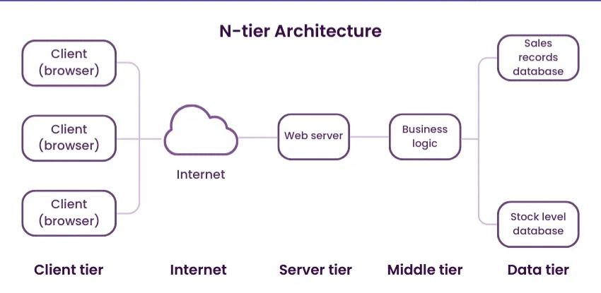

Multi-tier Architecture
A way of physically separating the functions of an application onto different computers
for security, scalability and perfomance.
Layers
The concept of a layered architecture is one where we regard different parts of a software system as having a separate role
This is a conceptual, rather than the physical, layering of system components.
The basic three layers are:
- The presentation layer - deals with user interface.
- The business logic layer - handles the business processes and concepts used in the application.
- The data management layer - deals with managing and persisting the underlying data in the system.
N-Tier Architecture
Once we start using large numbers of computers running on different parts of the system across
multi-tiers, we have an n-tier architecture.
- They are fundamental part of web applications because the presentation layer.
- The large number of users of some of these systems means thst the business logic and data management layers may also have to distributed across multiple machines.
